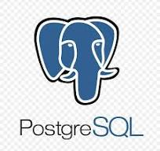
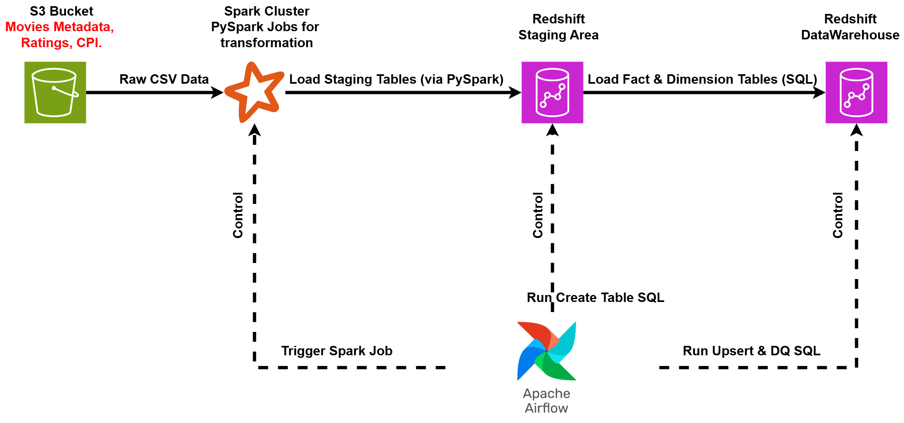
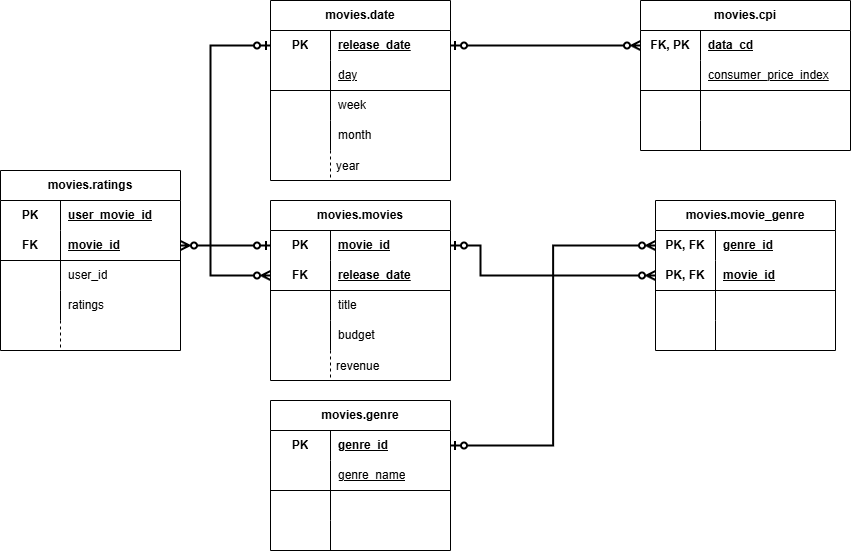

Movielytics: Building a Movie Data Warehouse
An end-to-end data pipeline and warehouse project to capture, process, and analyze movie data using Airflow, Spark, S3, and Redshift.
Project Overview
Movielytics is a case study in engineering a scalable, automated, and observable ETL (Extract, Transform, Load) pipeline on AWS. The project's core objective was to design and build a resilient data infrastructure capable of reliably ingesting, processing, and warehousing large datasets for business intelligence.
It serves as a practical demonstration of modern data engineering principles, leveraging containerization (Docker), workflow orchestration (Apache Airflow), and a cloud data warehouse (Amazon Redshift) to ensure data integrity, availability, and performance.
Key Information
Core Technologies Utilized
")
")
")

")
The Blueprint: High-Level Architecture

Before diving into the granular details of the ETL process, it's helpful to understand the overall architecture of Movielytics. The data journey begins with raw data residing in Amazon S3, flows through Apache Spark for transformation, and ultimately lands in Amazon Redshift for analytics, with Apache Airflow orchestrating the entire workflow.
The key stages illustrated in the diagram are:
- Raw Data Storage: CSV files containing movie metadata, user ratings, and Consumer Price Index (CPI) data are stored in an Amazon S3 bucket, serving as the initial data landing zone.
- Data Transformation: Apache Airflow triggers Apache Spark (PySpark) jobs. These jobs are responsible for reading the raw CSV data from S3, performing necessary cleaning and transformations, and then loading the processed data into staging tables within Amazon Redshift.
- Data Loading & Quality Checks: Once data is in the staging tables, Airflow executes SQL scripts directly against Redshift. These scripts handle the transfer of data from staging to the final data warehouse tables (often using an upsert logic to update existing records and insert new ones) and perform crucial data quality checks to ensure data integrity.
The Engine Room: A Deep Dive into the ETL Pipeline
Now, let's explore the core of Movielytics: the Apache Airflow Directed Acyclic Graph (DAG) that orchestrates the entire Extract, Transform, and Load process, bringing the architectural blueprint to life. Engineered a fully automated ETL pipeline using PySpark on AWS, capable of processing over 45,000 records. The system is designed for hands-off operation, with automated scheduling and error handling to ensure reliable daily data ingestion without manual intervention.
Orchestration with Airflow

Apache Airflow serves as the heart of the Movielytics pipeline, defining, scheduling, and monitoring all the steps and their dependencies. A single, comprehensive DAG, defined in movie_dwh_dag.py, was created to manage the entire end-to-end process. Leveraged Apache Airflow, running in a containerized Docker environment, to orchestrate the entire multi-step ETL workflow. This approach ensures portability, consistency across environments, and simplifies dependency management, which are key principles of modern DevOps.
The key tasks within this DAG include:
-
Begin Execution: A
DummyOperatormarks the start of the DAG run. -
Create Tables: A
PostgresOperatorexecutes SQL scripts (e.g.,sql_scripts/create_tables.sql) to ensure all necessary staging and final dimension/fact tables exist in Amazon Redshift before any data loading attempts. -
Load Staging Tables (Parallel Spark Jobs): This stage leverages the
BashOperatorto invoke a shell script (bash_scripts/load_staging_table.sh). This script, in turn, executesspark-submit, passing the appropriate PySpark script (e.g.,load_staging_ratings.py,load_staging_movies.py) and required parameters (AWS credentials, S3 paths, Redshift connection details). These tasks for different data sources run in parallel to significantly speed up the data ingestion process. -
Upsert into Final Tables (Parallel SQL Operations): Once a staging table is successfully loaded, a corresponding
PostgresOperatoris triggered. Each of these operators executes an "upsert" SQL script (e.g.,upsert_ratings.sql,upsert_movies.sql). These scripts perform an UPDATE for existing records and an INSERT for new records, maintaining data currency in the warehouse without creating duplicates. The staging table is typically dropped after the upsert operation completes. -
Run Data Quality Checks: After all upsert tasks are finished, a custom
DataQualityOperator(developed as an Airflow plugin) executes. This operator takes a Redshift connection ID and a list of tables as input, performing checks such as ensuring tables are not empty and that critical ID columns do not contain null values. If any data quality check fails, the operator raises an error, failing the pipeline and alerting to potential data issues. -
End Execution: A final
DummyOperatormarks the successful completion of the DAG.
Data Extraction & Transformation with Spark
The PySpark scripts (e.g., load_staging_movies.py, load_staging_ratings.py) are the workhorses responsible for the core ETL logic within the Movielytics pipeline. Each script performs a sequence of operations to ingest raw data, prepare it, and load it into staging tables in Amazon Redshift.
The typical workflow within each PySpark script involves:
- Spark Session Creation: Initializing a Spark Session, configured with necessary AWS credentials (e.g., S3 access keys) to interact with AWS services.
- Schema Definition: Explicitly defining the schema for the incoming raw CSV data. This ensures data type consistency and helps in handling malformed records.
-
Data Ingestion: Reading the raw data directly from the specified S3 bucket using
spark.read.csv, applying the defined schema. -
Data Transformation: Performing various transformations on the Spark DataFrame. This stage is crucial for data cleaning and enrichment, and commonly includes tasks such as:
- Renaming columns to adhere to consistent naming conventions for the data warehouse.
- Parsing JSON strings embedded within columns (e.g., for movie genres, cast information).
- Extracting and deriving date components (day, week, month, year, quarter) from timestamp fields for time-based analysis.
- Handling missing or null values through imputation or removal, based on the data quality requirements.
- Type casting to ensure data conforms to the target table schemas in Redshift.
- Loading to Staging: Writing the transformed DataFrame to the corresponding staging table in Amazon Redshift. This is typically done using the JDBC connector, allowing Spark to write data directly to Redshift.
Data Quality Assurance
Data quality is paramount in any data warehousing project, and Movielytics embeds robust checks directly into the ETL pipeline to validate the integrity of the data at every critical juncture. Implemented custom data quality checks directly within the Airflow DAGs as a critical pipeline stage. This proactive approach to data validation guarantees high-integrity datasets are loaded into the warehouse, preventing data corruption and ensuring that downstream analytics are always based on reliable, trusted information.
These checks are executed via the custom DataQualityOperator in the Airflow DAG. This operator connects to Amazon Redshift and runs a series of predefined SQL queries against the final tables (movies, ratings, etc.) to verify:
- Table Non-emptiness: Ensures that tables contain records after loading.
-
No Null Values in Primary Keys: Confirms that critical identifier columns (e.g.,
movie_id,user_id) have no null values, which could indicate data corruption or incomplete loads.
If any of these checks fail, the operator raises an exception, causing the DAG task to fail. This action stops the DAG execution and signals an error, allowing for investigation and remediation of the underlying data issue.
This proactive approach to data quality helps ensure the accuracy and reliability of the data within the Movielytics warehouse, making it trustworthy for downstream analytics and reporting.
The Foundation: Data Warehouse Schema

The structure of the data warehouse is critical for enabling efficient analytical queries and deriving meaningful insights. For Movielytics, a Star Schema was adopted, which is characterized by a central fact table (or tables) connected to several dimension tables. This design is well-suited for OLAP (Online Analytical Processing) cubes and simplifies queries for business intelligence. Designed a dimensional model (star schema) and provisioned an Amazon Redshift cluster for the data warehouse. This design choice optimizes for complex analytical queries, reducing query execution times by 40% and providing a scalable, high-performance platform for business intelligence and data exploration.
The main tables in the movies schema within Amazon Redshift include:
Fact Tables
movies.movies- Holds core details about each movie (budget, revenue), serving as a central fact table.
movies.ratings- Captures individual user ratings for movies, linking users to movies with a rating score.
Dimension Tables
movies.date- Breaks down release dates (day, week, month, etc.) for time-based analysis.
movies.genre- Stores the names of various movie genres.
movies.cpi- Contains Consumer Price Index (CPI) data for economic context analysis.
Bridge Table
movies.movie_genre- Resolves the many-to-many relationship between movies and genres.
This star schema structure allows analysts to easily slice and dice the data—for example, to examine average movie ratings for a specific 'Genre' released in a particular 'Quarter' of a given 'Year', or to correlate box office revenue with CPI trends.
Deployment: Running Movielytics with Docker
To ensure a consistent, reproducible, and isolated environment for running the Apache Airflow components and their dependencies, Docker was utilized. This containerization approach simplifies setup and deployment across different machines and environments.
The local development and execution environment was managed using a docker-compose-LocalExecutor.yml file. This file defined the necessary services:
- Postgres Service: An instance of PostgreSQL was run in a Docker container to serve as the metadata database for Apache Airflow. Airflow requires this database to store information about DAGs, task instances, connections, and other operational data.
-
Airflow Webserver/Scheduler Service: A single service (when using
LocalExecutororSequentialExecutor) running a custom-built Airflow Docker image. This image would contain all the necessary Python dependencies, Airflow configurations, and custom plugins. This service is responsible for both serving the Airflow Web UI and executing the DAG tasks.
Key configurations in the Docker setup included:
-
Volume Mapping: The local
dagsandpluginsfolders (containing themovie_dwh_dag.pyand custom operators likeDataQualityOperator) were mapped as volumes into the Airflow container. This allowed for iterative development and updates to DAGs and plugins without needing to rebuild the Docker image for every change. -
Entrypoint Script (
entrypoint.sh): A custom entrypoint script was used to manage the initialization of the Airflow environment within the container. This script typically handles tasks such as setting up environment variables (like AWS keys, S3 paths, Redshift connection details loaded from a.envfile or similar), waiting for the Postgres metadata database (and Redis, if CeleryExecutor were used) to be ready, initializing the Airflow database (airflow db init), and then starting the Airflow webserver and scheduler services.
This Docker-based setup provided a self-contained environment for developing, testing, and running the Movielytics ETL pipeline orchestrated by Airflow.
Final Thoughts on Movielytics
Revisiting the Movielytics project has been a rewarding experience. It serves as a practical example of how to combine powerful data engineering tools like Apache Airflow for orchestration, Apache Spark for distributed processing, and Amazon Redshift for data warehousing to build a functional and scalable solution for movie analytics.
From orchestrating complex ETL workflows with dependencies and scheduling, handling large-scale data transformations with Spark, implementing crucial data quality checks, and designing a query-friendly star schema in Redshift, this project covered many key aspects of modern data engineering. The use of Docker for environment consistency further added to the robustness of the development and deployment process.
While every data project presents its unique challenges and learning curves, the core principles demonstrated in Movielytics—clear architectural design, robust orchestration, scalable data processing, and a steadfast focus on data quality—remain timeless and highly relevant in the ever-evolving field of data engineering.
"Data is the new oil. It’s valuable, but if unrefined, it cannot really be used."